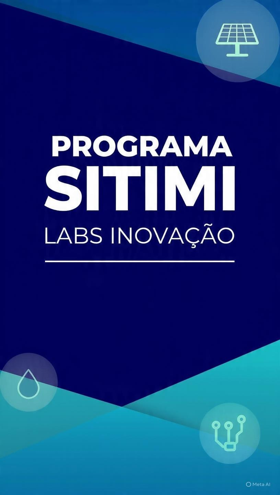
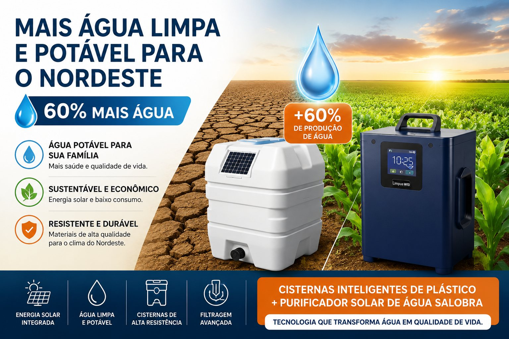
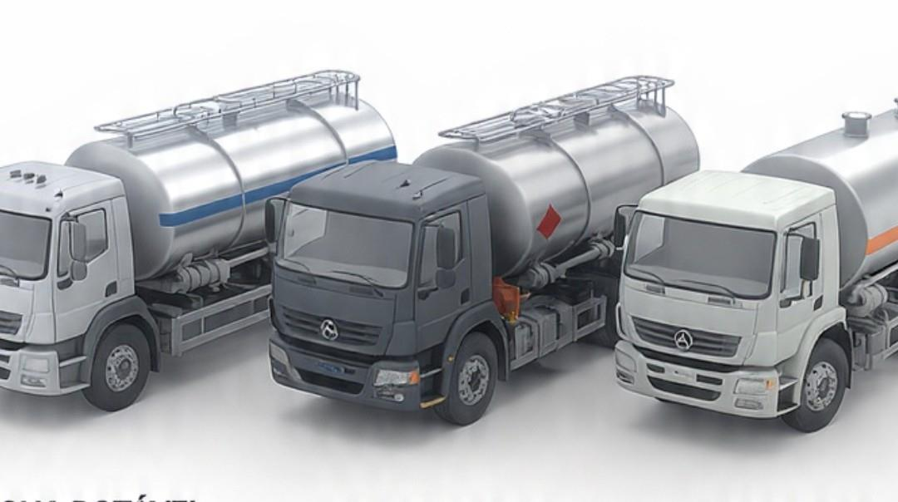

Inovação e tecnologia aplicada
Programa SITIMI Labs Inovação
A Sitimi Labs Inovação é uma empresa brasileira de empreendimentos de impacto voltados para ESG, ODS e alto impacto positivo socioambiental, com comércio, serviços e Pesquisa, Desenvolvimento & Inovação.
Registrada em Sobral/Ceará desde 21/09/2024, com escritório no Rio de Janeiro/RJ e produtos desenvolvidos principalmente a partir da aplicação de patentes verdes nacionais e internacionais inovadoras.

Quem somos
Uma empresa brasileira de impacto, inovação e aplicação prática.
- ESG
- ODS
- P,D&I
- Patentes verdes
- Impacto
Programa
Cartilhas e ferramentas para implantação, divulgação e captação.
Cartilhas Sitimi Labs Inovação, impressas e digitais, de implantação imediata: instrumentos de divulgação, informação, conhecimento e captação de recursos para o Projeto Cisternas Inteligentes - Mais Água Limpa e Potável - ODS 6 e demais projetos.
O programa apoia projetos de água limpa, ESG e ODS no Semiárido Brasileiro com materiais institucionais, conteúdo técnico e orientações práticas.
- Cartilhas impressas e digitais com conteúdo técnico, educativo e ilustrativo.
- Guias de implantação imediata com orientações práticas passo a passo.
- Materiais institucionais para apresentação de projetos e sensibilização de parceiros.
- Ferramentas para editais, patrocínios, investimento social privado e parcerias.
- Conteúdo alinhado a ESG e aos ODS da ONU, com foco no ODS 6.
Causa socioambiental
Benefícios para famílias, territórios e regiões com escassez de água.
Parte substancial das atividades e resultados obtidos pela Sitimi Labs Inovação, especialmente as ligadas à água, desemboca na causa socioambiental da empresa. A meta é promover benefícios às populações carentes das regiões de Semiárido ou semelhantes do Brasil e do mundo, por meio de convênios, licenciamentos e auxílio direto quando aplicáveis.
A principal meta inicial é atender aos beneficiários das 1,3 milhões de famílias de atuais usuários das Cisternas de Placas já instaladas no Nordeste brasileiro.

Projetos prioritários
Frentes de alto impacto socioambiental.
Água é o eixo principal, com integração a energia, agricultura, saneamento, logística, educação e geração de renda.

ODS 6 + IoT
Cisternas Inteligentes
Cisternas de plástico reforçado com design e funções inovadoras para ampliar a oferta de água limpa e potável no Semiárido.
- +60%Mais água
- 1,3MFamílias-alvo
- ODS 6Água limpa

Solar + Água
Purificador e Dessalinizador Solar
Módulos para purificar água salobra e do mar, com aplicação em poços, rios, reservatórios, cacimbas, cisternas e águas cinzas.
Cada módulo produz cerca de 25 litros de água potável por dia, dispensando osmose reversa e podendo ser aplicado em diferentes regiões.
- 25LPor módulo/dia
- 140kPoços no Semiárido
- SolarBaixo custo
Agro + Eficiência
Irrigação no Semiárido
Gotejamento, pivô central, microaspersão e sulcos para otimizar água, energia e insumos na agricultura familiar e produtiva.
A proposta busca aumentar a eficiência, reduzir consumo de recursos e gerar mais e melhores safras.
- 95%Eficiência possível
- SafrasProdutividade
- AgroBaixo desperdício

Logística + Água
Tanques Rodoviários Inovadores
Soluções para transporte de água, líquidos, pastosos e pós, conectando logística, segurança e melhor custo-benefício operacional.
- LogTransporte
- ÁguaAbastecimento
- B2BAplicação ampla
Investimentos e parcerias
Vamos levar o Programa Sitimi Labs Inovação para mais famílias e territórios?
Estamos captando recursos por meio de pré-vendas, parcerias, fomentos, campanhas, doações e investidores para viabilizar nossos projetos voltados à água e iniciativas de interesse comum.
Os investimentos necessários para operacionalizar os três projetos variam de R$ 200 mil até R$ 1 milhão.
Gostaríamos de conhecer sua apreciação e interesse em apoiar a proposta e estamos à disposição para esclarecimentos.
Eduardo Monte, Fundador & CEO da Sitimi Labs Inovação